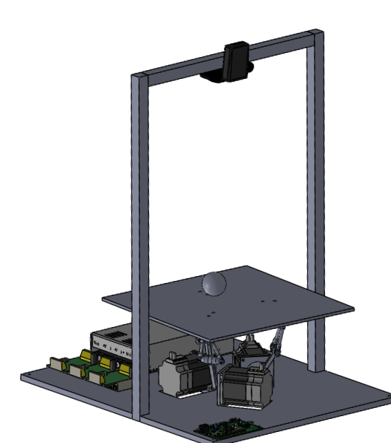
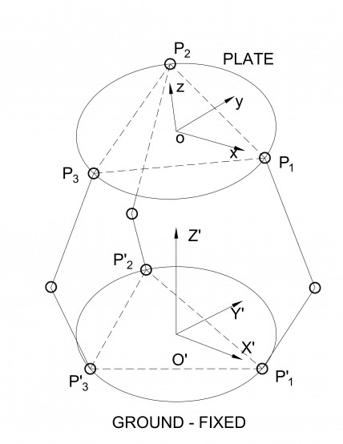
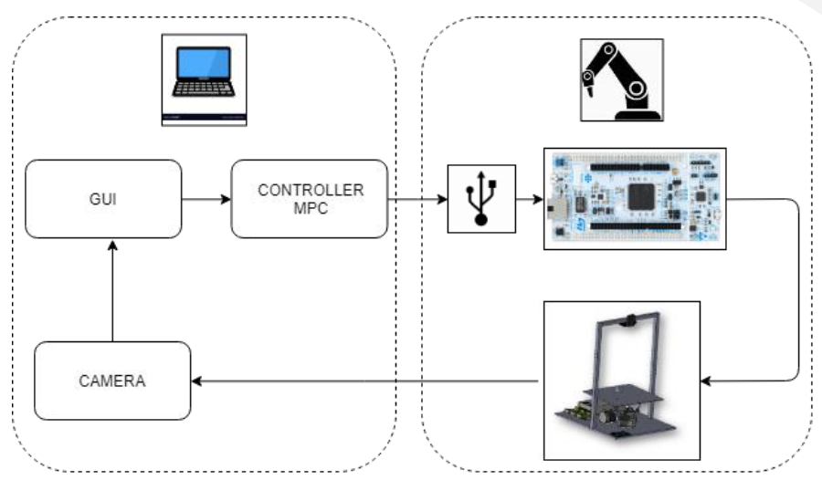

I grow my own skills around control, programming, mechanical design and embedded systems.
My graduation thesis is a highlight demonstration for my skills, which involves:
System identification and modeling
Nonlinear Model Predictive Control
Embedded systems
Mechanical design
Programming
Model predictive control
Model Predictive Control (MPC) has been traditionally and successfully employed in the process
industry and recently also for hybrid systems.
The control action is obtained by minimizing an objective function at each time step over a finite
horizon subject to the equations and constraints of the model. .
where $ x \in {R}^ {n \times n}$, $ u \in {R}^ {m \times m}$ are state and control variables,
$ \dot x = f(x(t), u(t)) $ are the state space model of system,
$ G(x) \leq g, H(u) = h$ are constrain functions.
Normally, a nonlinear least squares optimization is used to calculated the input variables,
the optimization problem can be show in dicrete time domains:
There are many method to slove the constrained nonlinear optimization, also open-source solver
such as
quadratic programming (qpOASES),
CVXGEN, sequantial
quadratic programming,
In this project, SQP has been used to solve the problem.
Dynamics and controls
After solving the optimization problems, apply the input $ u $ to the systems
as the volocity and joint angles of the motors.
Inverse kinematics is the mathematical process of recovering the movements of an plate into the
movements of three motor.
These images illustrate the systems design by solidworks and world coordinate of systems:


Considering the center of plate is fixed,
the position of $P_1, P_2, P_3 $ is calculated using rotation matrix, and then the rotation angles
of motors.
Hardware and software
The ball and plate system requires not only high performance real-time controller,
but also an effective embedded platform to implement the controller.
The following diagram shows the system elements clearly:

A web camera is used to capture the image of the ball in the plate,
then the application calculate the position of the ball and sends it to the MPC controller,
the result of MPC which includes the velocity and rotation angle will be send to STM32h7 board to
drive the motor.
In order to control motors speed and angle smoothly and simultaneously without interrupt,
PI controller and slave-master timers are used.
Further information and source could be seen at
Github
.